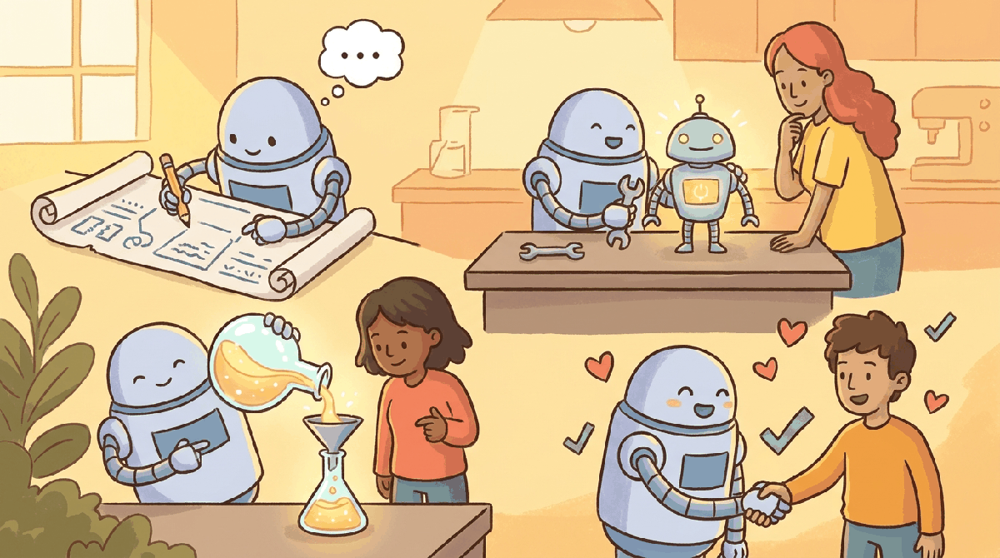

a Kurzgesagt-meets-XKCD visual metaphor with friendly characters and clear iconography, capturing the theme: Generating data, fine-tuning models, distilling knowledge, and aligning with human pref..."Give me a lever long enough and a fulcrum on which to place it, and I shall move the world."
Archimedes
Part Overview
Part IV is the heart of the book for practitioners who want to customize LLMs. You will learn to generate synthetic training data, fine-tune models (full and parameter-efficient), distill large models into smaller ones, merge model weights, and align models with human preferences via RLHF, DPO, Constitutional AI, and RLVR. This is the most technically dense part of the book; take your time with the labs.
Chapters: 5 (Chapters 17 through 21). Builds on API and prompting skills from Part III and supplies the trained models used in Part V and beyond. The part closes with a Tools of the Trade chapter on the transformers / trl / peft / axolotl / lit-gpt training stack.
Off-the-shelf models only get you so far. Part IV teaches you to bend LLMs to your needs through synthetic data, fine-tuning, distillation, and alignment, turning general-purpose models into specialized tools you can trust.
- 21.1 Platforms
- 21.2 Libraries & Frameworks
- 21.3 Datasets & Benchmarks
- 21.4 Models
- 21.5 External Reading & Communities
- 21.6 HuggingFace Datasets and Tokenizers Deep Dive
- 21.7 HuggingFace Trainer and Accelerate
- 21.8 HuggingFace PEFT and TRL Deep Dive
- 21.9 Data Version Control (DVC)
- 21.10 Linking Experiment Runs to Git Commits
- 21.11 Weights and Biases Deep Dive
- 21.12 MLflow Deep Dive
- 21.13 Experiment Comparison and Hyperparameter Optimization
- 21.14 PySpark for LLM Data Pipelines
- 21.15 Delta Lake and Lakehouse Architecture
- 21.16 Feature Stores for ML
- 21.17 Distributed Training Deep Dive
- 21.18 Databricks Workspace and Unity Catalog
- 21.19 Databricks AI and Foundation Models
- 21.20 Ray Train, Ray Serve, and Ray Data